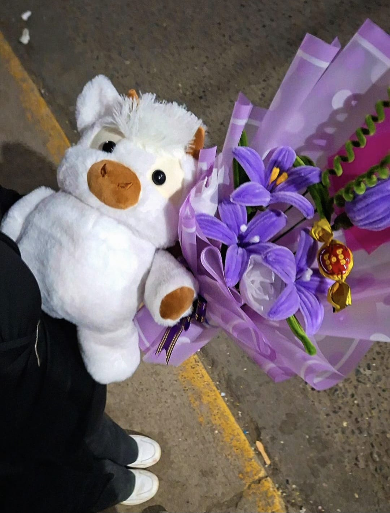

Always

Un mes de nosotros
Hoy celebramos nuestro primer mes juntos, y me hace muy feliz pensar en todo lo bonito que empezó entre nosotros. ✨️🥹 Aunque haya kilómetros de por medio, te llevo conmigo en mis pensamientos, en mis sonrisas y en cada canción que me recuerda a ti. ✨️🥹
Quiero que sepas que confío en ti y en lo que estamos construyendo. ✨️🥹 Cuéntame todo lo que quieras: tus alegrías, tus miedos, tus sueños, las cosas que te hacen reír y también esos días en los que solo necesitas que alguien te escuche. ✨️🥹 Quiero ser ese lugar seguro para ti, así como tú eres alguien muy especial para mí. ✨️🥹
No tienes que guardarte nada conmigo. ✨️🥹 Me importa cada parte de tu mundo y quiero conocerte cada día un poquito más. ✨️🥹 Gracias por abrirme tu corazón y dejarme acompañarte, aun cuando por ahora nos toque querernos desde lejos. ✨️🥹
La distancia puede hacer que extrañe tus abrazos, pero nunca hace más pequeño mi amor. ✨️🥹 Cada día que pasa es un día menos para volver a encontrarnos, mirarnos de cerquita y crear recuerdos que algún día contaremos sonriendo. ✨️🥹
Feliz primer mes, mi amor. ✨️🥹 Gracias por existir y por elegirme. ✨️🥹
Te amo mucho, mi niña hermosa ❤️, siempre estaré contigo. ✨️🥹